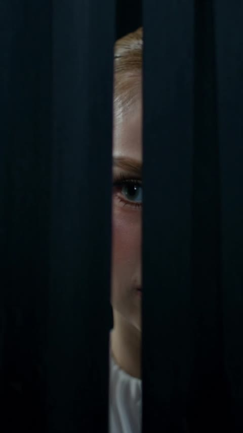
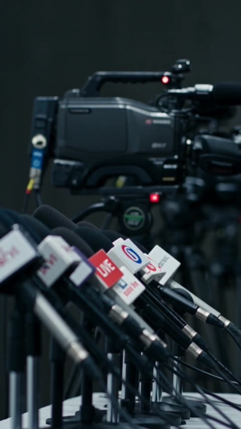
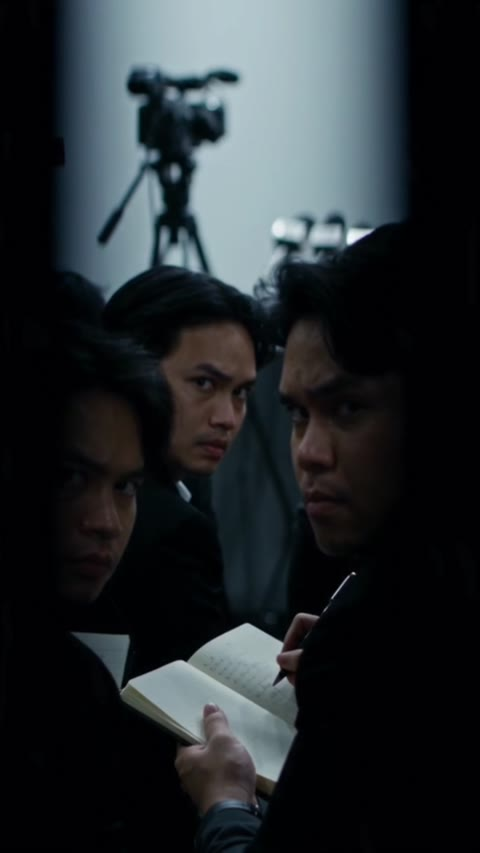
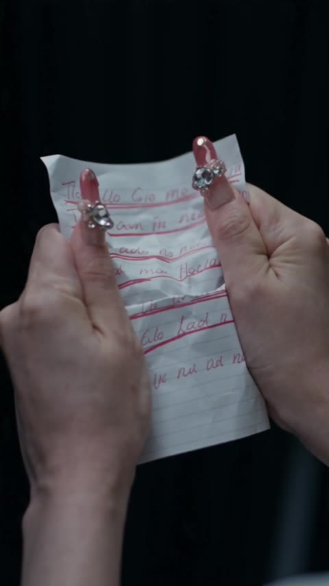
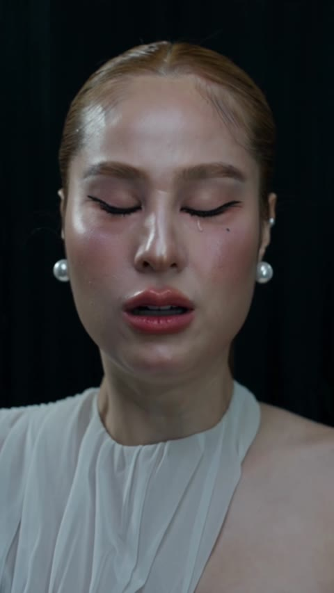
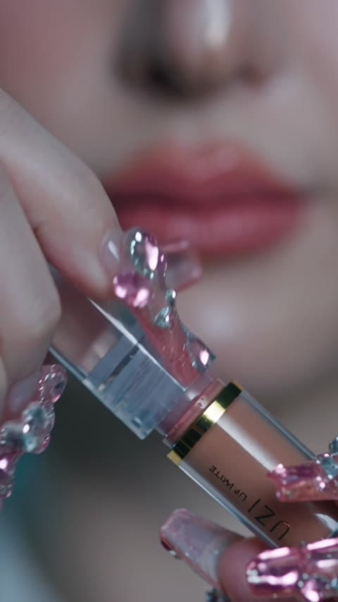
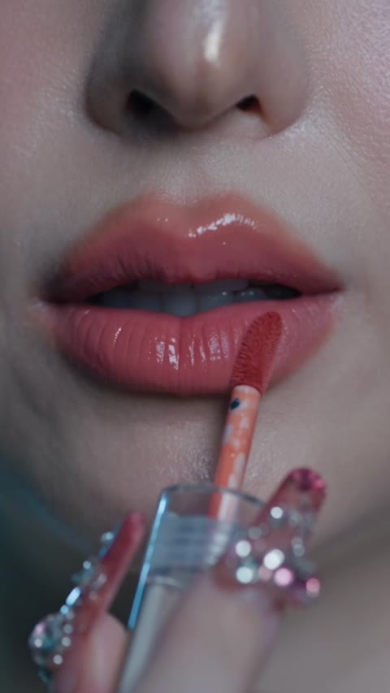
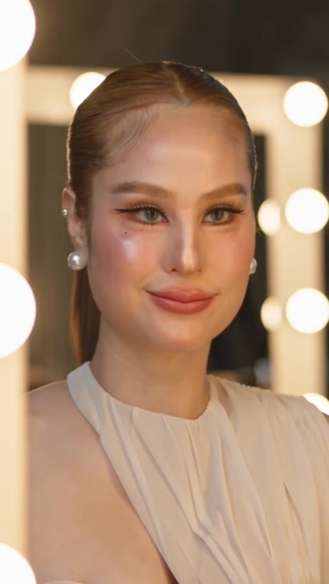
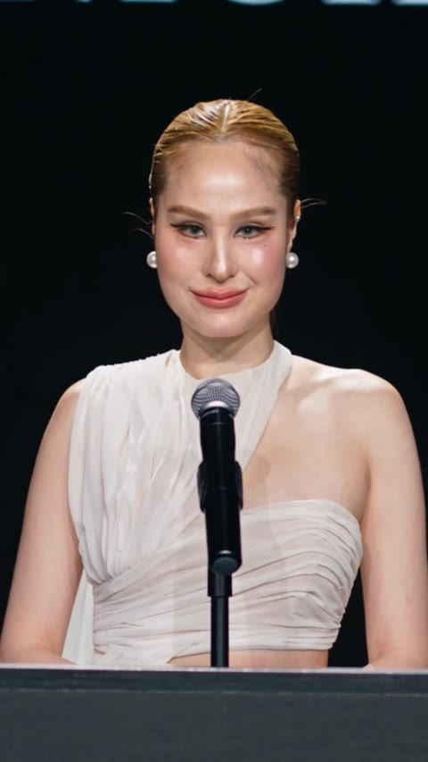
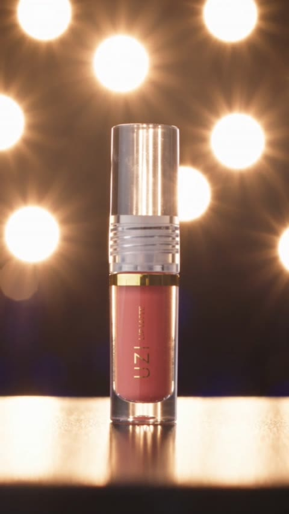

UZI COSMETICสตอรี่บอร์ดภาพ · หน้า 1/3
“วันแถลงข่าว”UZI Matte Liquid Lipstick · คลิปแนวตั้ง 9:16 · ประมาณ 40 วินาที
อีกสามนาที เธอต้องออกไปแถลงข่าว ครั้งแรกในชีวิต ความกดดันทำให้เธอเกือบพัง
จนกระทั่งเธอกลับไปหน้ากระจก แล้วทาลิปแท่งโปรด เธอจึงพบว่าสิ่งที่ต้องเตรียมไม่ใช่สคริปต์ แต่คือความมั่นใจ
ภาพเดิมมีในคลิปแล้ว
ช็อตใหม่ต้องถ่าย/เจนเพิ่ม
ควรเจนใหม่มีแล้วแต่ต้องแก้
ตัวหนังสือบนภาพ = สิ่งที่คนดูจะเห็นจริง
องก์ 1
ก่อนม่านเปิด
แรงกดดันที่ถาโถมเข้ามา
โทนสี: เย็น เทาฟ้าอารมณ์: กลัว ตื่นเต้น
ภาพเดิม
แถลงข่าว
ครั้งแรกในชีวิต
“อีกสามนาที…”
010:00–0:02HOOK
อีกสามนาที เธอต้องออกไปแถลงข่าวครั้งแรกในชีวิต เธอแอบมองผ่านช่องม่าน หัวใจเต้นแรงจนได้ยินเสียงตัวเอง
ภาพเดิม
● LIVE
020:02–0:03.5
ไมค์ทุกช่องตั้งเรียงรออยู่ ไฟแดงบนกล้องติดแล้ว ทุกคำที่เธอพูดจะถูกถ่ายทอดสด
030:03.5–0:05
ห้องเต็มไปด้วยนักข่าว ทุกคนนั่งรอ โต๊ะตรงกลางยังว่างเปล่า… รอเธอคนเดียว
ภาพเดิม
“ทุกคนรอให้เราพลาด”
040:05–0:07
จู่ๆ นักข่าวก็หันขวับมาทางม่าน เหมือนรู้ว่าเธอแอบมองอยู่ สายตาแบบนั้นพร้อมจับผิดทุกคำ เธอรีบปิดม่าน
ภาพเดิม
“เขียนใหม่กี่รอบ… ก็ยังไม่ใช่เรา”
050:07–0:09
เธอก้มมองโพยในมือ เขียนแล้วขีดฆ่า ขีดฆ่าแล้วเขียนใหม่ จนกระดาษยับไปหมด
ภาพเดิม
“ถ้าพูดผิดแค่คำเดียว…”
060:09–0:11
แรงกดดันทั้งหมดถาโถมเข้ามา เธอหลับตา น้ำตาหยดหนึ่งไหลลงแก้ม
UZI COSMETICสตอรี่บอร์ดภาพ · หน้า 2/3
องก์ 2
หน้ากระจก
พิธีกรรมเล็กๆ ที่เรียกความมั่นใจคืนมา
โทนสี: ค่อยๆ เปลี่ยนจากเย็นเป็นอุ่นอารมณ์: ตั้งสติ ฮึบ
070:11–0:13
เธอกลับมาที่หน้ากระจก หายใจลึกๆ แล้วเปิดกล่องเครื่องสำอางใบเล็ก
ภาพเดิม
UZI
Matte Liquid Lipstick
080:13–0:14.5PRODUCT
ของชิ้นเดียวที่เธอหยิบออกมา คือลิปแท่งโปรด UZI Matte Liquid Lipstick
ภาพเดิม
เนื้อแมทนุ่มลื่นไม่ตกร่องกลบสีปากคล้ำมิด
090:14.5–0:17.5
เธอค่อยๆ ปาดลิปลงบนริมฝีปาก สีค่อยๆ ชัดขึ้น เหมือนความมั่นใจที่กำลังกลับมา
100:17.5–0:18.5
เม้มปากเบาๆ หนึ่งที… พร้อมแล้ว
ช็อตใหม่
🧻
ถ่ายจริงด้วยสินค้าจริง
ซับน้ำตาด้วยทิชชู่
แล้วกดทิชชู่ลงบนปาก
↓
มาโครทิชชู่ที่ขาวสะอาด
ไม่มีสีลิปติด
น้ำตาไหลได้… แต่ลิปไม่หลุด
110:18.5–0:21PROOF
เธอซับน้ำตาด้วยทิชชู่ แล้วลองกดทิชชู่ลงบนปาก ทิชชู่ยังขาวสะอาด ลิปไม่หลุดสักนิด
ข้อความบนจอ: “น้ำตาไหลได้… แต่ลิปไม่หลุด”
ภาพเดิม
“โอเค… นี่แหละตัวเรา”
120:21–0:23TURNING POINT
เธอมองตัวเองในกระจกอีกครั้ง… แล้วยิ้มออกมาได้เป็นครั้งแรก
130:23–0:24
เธอเก็บลิปลงกระเป๋า แล้วหยิบโพยที่ขยำไว้ขึ้นมาดูอีกครั้ง…
ช็อตใหม่
📄
เจนเพิ่มได้
โพยขยำวางบนโต๊ะเครื่องแป้ง
(ชัดอยู่ข้างหน้า)
↓
ด้านหลังเธอเดินห่างออกไป
จนภาพเบลอ
13b0:24–0:25.5
แต่คราวนี้เธอวางมันทิ้งไว้บนโต๊ะ แล้วเดินออกไปมือเปล่า เธอไม่ต้องใช้สคริปต์อีกแล้ว
UZI COSMETICสตอรี่บอร์ดภาพ · หน้า 3/3
องก์ 3
ม่านเปิด
ออกไปเผชิญ ด้วยความมั่นใจเต็มร้อย
โทนสี: ทองอุ่นเต็มที่อารมณ์: มั่นใจ สง่า
140:25.5–0:28
ม่านเปิด เธอก้าวออกไปท่ามกลางแสงแฟลชที่รัวมาจากทั่วห้อง
150:28–0:29.5
นักข่าวที่เคยจ้องจับผิด ถึงกับหยุดเขียน เงยหน้ามองเธออย่างตะลึง
ช็อตใหม่
🥛
ถ่ายจริง · ใส่หรือไม่ใส่ก็ได้
นั่งที่โต๊ะแถลง จิบน้ำ
วางแก้วลง
↓
มาโครขอบแก้ว
ไม่มีรอยลิป
ไม่ติดแก้ว
160:29.5–0:31PROOF
เธอนั่งลงที่โต๊ะแถลง จิบน้ำหนึ่งอึกแล้ววางแก้ว ขอบแก้วไม่มีรอยลิปเลย
ภาพเดิม
“วันนี้ฉันไม่ได้เตรียมสคริปต์มาค่ะ…
ฉันเตรียมมาแค่ความมั่นใจ”
170:31–0:35PAYOFF
ทั้งห้องเงียบ เธอหลับตาครู่หนึ่ง แล้วพูดจากใจ ก่อนส่งยิ้มที่มั่นใจที่สุดของวัน
บทพูด (เสียงจริงของเธอ):
“วันนี้ฉันไม่ได้เตรียมสคริปต์มาค่ะ… ฉันเตรียมมาแค่ความมั่นใจ”
ภาพเดิม + การ์ด
เบอร์ [ชื่อสี]
เนื้อแมทนุ่ม · ไม่ตกร่อง · ไม่ติดแก้ว
[โปรโมชั่น]
กดตะกร้าเลย 🛒
180:35–0:40END CARD
ปิดด้วยภาพลิปท่ามกลางแสงไฟ และประโยคที่ทุกคนเอาไปใช้กับชีวิตตัวเองได้
เสียงแบรนด์ปิดท้าย:
“ทุกคนมีวันแถลงข่าวของตัวเอง… มั่นใจได้ ตั้งแต่ริมฝีปาก”
ตอนจบทางเลือก (สำหรับ TikTok / ยิงแอด): หลังเธอพูดจบ นักข่าวยกมือ “ขอถามคำถามเดียวค่ะ… ลิปสีอะไรคะ?” เธอยิ้มแล้วยกลิป UZI หันเข้ากล้อง แฟลชรัวทั้งห้อง ก่อนตัดเข้าภาพสินค้าพร้อมข้อความ “คำตอบอยู่ในตะกร้า 🛒”